1er site indépendant de comparaison d’assurance, lancé en septembre 2012
Un lieu unique pour comparer rapidement des centaines d’offres (assurances auto, moto, MRH, santé et emprunteur)
"La gestion de versions (en anglais version control ou revision control) consiste à maintenir l'ensemble des versions d'un ou plusieurs fichiers (généralement en texte)."
Fait partie d'une pratique plus large, le SCM, soit software configuration management qui contient la gestion et la construction du code
Essentiellement utilisée dans le domaine de la création de logiciels (code source), mais commence à être utilisé dans d'autres domaines
- La code base est sur git et contient 3 920 475 lignes de code.
- On est 25 développeurs sur la même code base
- Nous avons plusieurs dépôts git pour la même application (lesfurets-studies, lesfurets-features, etc.) grâce à la décentralisation de git.
- Le dépôt fait 1 Go, 51 590 commits, 37 branches en parallèle et 738 versions (tags).
En comparaison, Google a 2 milliards de lignes de code, un historique de 35 millions de commits, une taille de 86 terabytes et 45 000 commits par jour (autant que tout notre historique depuis 3 ans).
Subversion (SVN) : historiquement plus utilisé
git : utilisé pour le code source de Linux
GNU Bazaar : maintenu par Canonial (Ubuntu)
Mercurial : semblable à git
Team Foundation Server : propriétaire microsoft
Branch, merge : séparation (branch) et fusion (merge) de 2 historiques de développement
Checkout, commit : récupération de contenu (checkout) ou persistance de contenu (commit)
Pull, push : téléchargement de contenu (pull) et envoi de contenu (push)
1972 : Début des VCS chez Bell labs avec SCCS
1986 : Naissance de CVS (Concurrent Version System), qui deviendra l'un des gestionnaire de source les plus utilisés pendant plusieurs années (encore utilisé aujourd'hui)
2000 : Création de Apache Subversion (SVN) pour succéder à CVS et palier à ses défauts
2015 : Encore très utilisé aujourd'hui
1990 : Beaucoup de développements, autant en open source qu'en propriétaire, de différents systèmes (centralisés ou non)
2002 : Le code de Linux est partagé sous forme de patchs jusqu'en 2002, puis passage à un DVCS propriétaire, Bitkeeper
2005 : Relations tendues avec les développeurs de Bitkeeper, Linus Tolvalds (et la communauté Linux) développent git
2015 : Probablement le gestionnaire de source le plus utilisé aujourd'hui
Centralisé : gestion de source "historique" avec CVS et SVN, il n'y a qu'un seul serveur de source
Décentralisé : popularisé au début des années 2000, prend son ampleur avec git, la totalité du code est présent sur chacune des machines clients
Quels sont les avantages / inconvénients des 2 approches ?
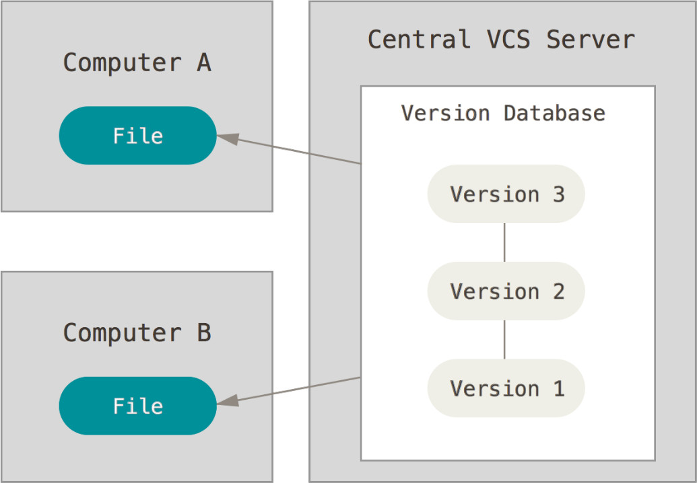
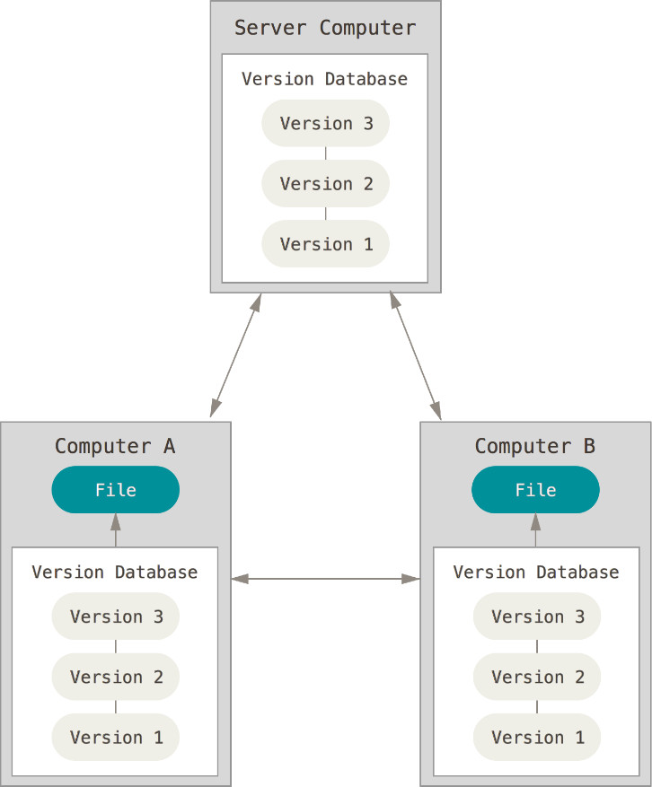
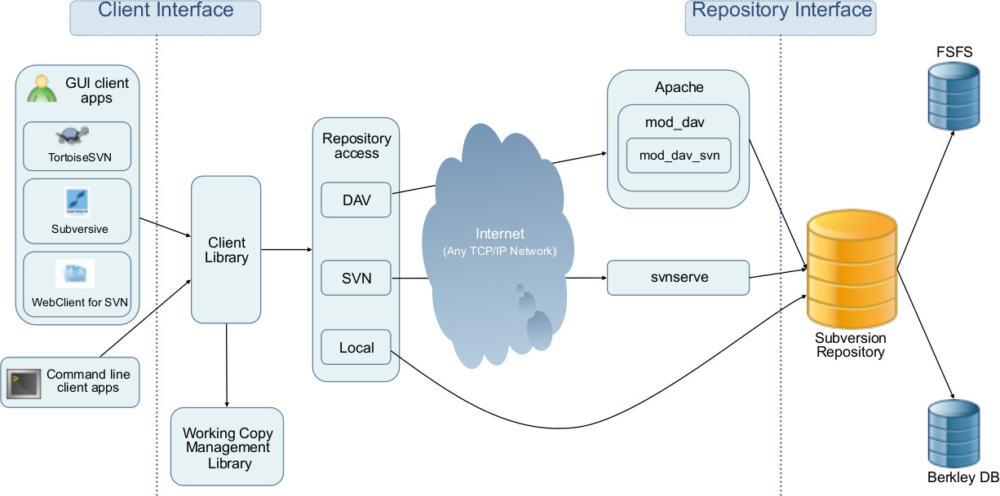
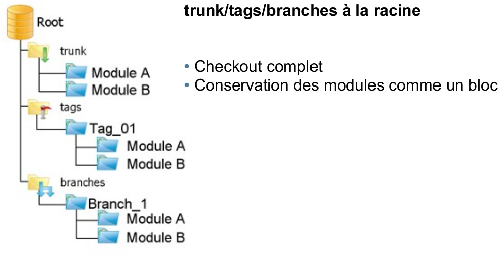
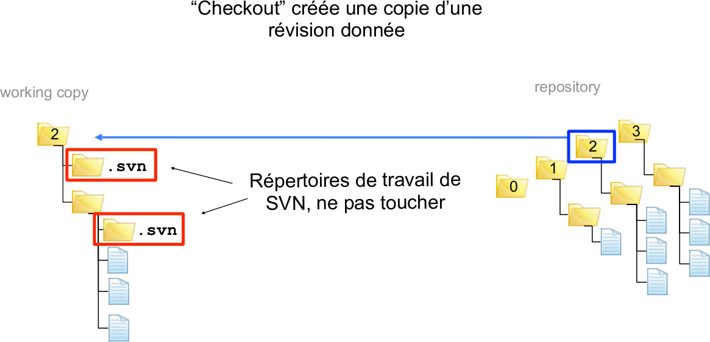
checkout : Récupère la version actuelle du code
update : Synchronise vos changements locaux avec le distant
add : Ajoute un fichier au gestionnaire de version
commit : Persiste les changements locaux dans le master
Complètement distribué
Support pour les développements non linéaires
Vitesse pour certaines opérations très précises (changement de branche, fusion, etc.)
Peut gérer d'énormes projets (noyau Linux, code base Google, etc.)

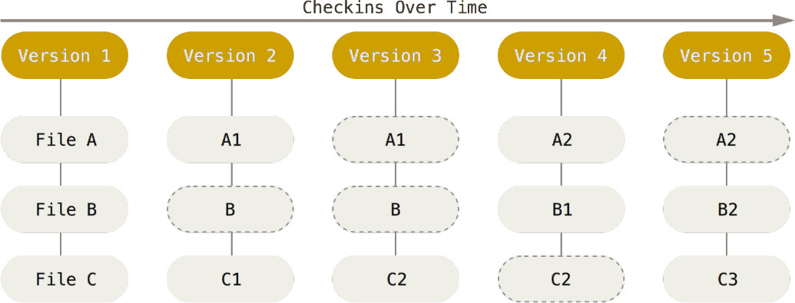
Opérations presque toutes locales
Gestion de l'intégrité (SHA-1)
Ajout seulement (sauf rebase)
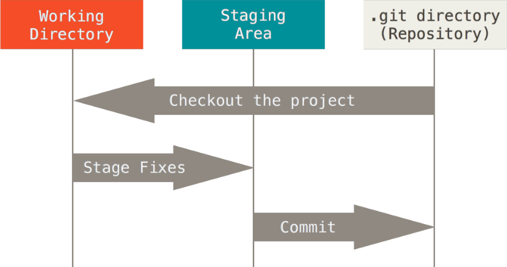
Les commandes de base permettent d'ajouter des fichiers à git, de les enlever, de lister les modifications, de faire la différences entre des versions, etc.
Liste les commandes les plus usuelles et leur usage
$ git help
usage: git [--version] [--help] [-C path] [-c name=value]
[--exec-path[=path]] [--html-path] [--man-path] [--info-path]
[-p|--paginate|--no-pager] [--no-replace-objects] [--bare]
[--git-dir=path] [--work-tree=path] [--namespace=name]
command [args]
The most commonly used git commands are:
add Add file contents to the index
bisect Find by binary search the change that introduced a bug
...
Utiliser git help avec une commande pour en savoir plus
$ git help add
GIT-ADD(1) / Git Manual / GIT-ADD(1)
NAME
git-add - Add file contents to the index
SYNOPSIS
git add [-n] [-v] [--force | -f] ...
...
DESCRIPTION
...
Démarrer un dépôt git vide
$ git init .
Initialized empty Git repository in /home/dubreuia/Documents/project/git/src/.git/
$ git add git-gestion-version-m1.html
$ git commit -m "Ajout presentation HTML"
[master (root-commit) 876c849] Ajout presentation HTML
1 file changed, 0 insertions(+), 0 deletions(-)
create mode 100644 git-gestion-version-m1.html
Cloner un dépôt existant, normalement disponible sur une autre machine, sur github, etc., précédemment créé par git init
$ git clone https://github.com/lesfurets/lesfurets-conferences.git
Cloning into 'lesfurets-conferences'...
remote: Counting objects: 547, done.
remote: Total 547 (delta 0), reused 0 (delta 0), pack-reused 547
Receiving objects: 100% (547/547), 39.13 MiB | 1.09 MiB/s, done.
Resolving deltas: 100% (234/234), done.
Checking connectivity... done.
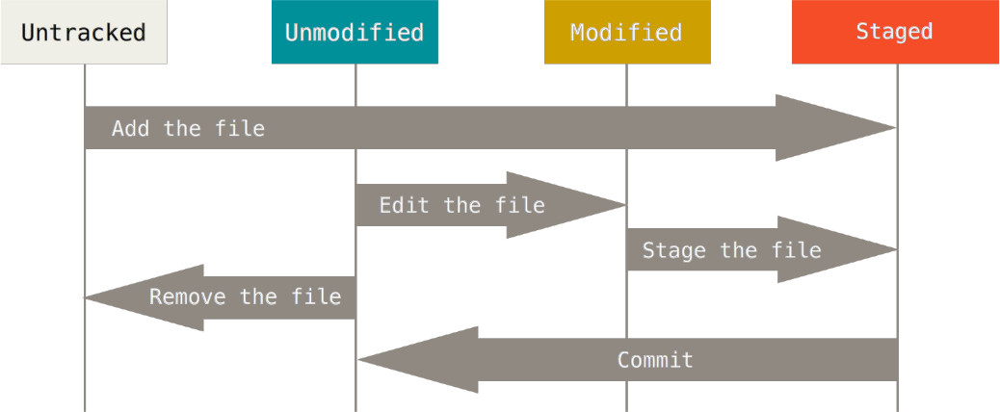
Obtenir le statut des modifications du répertoire de travail
$ git status
On branch master
Untracked files:
(use "git add file..." to include in what will be committed)
github-code-civil-france-01.jpg
google-repository-02.jpg
nothing added to commit but untracked files present (use "git add" to track)
Ajouter un nouveau fichier à git
$ git add github-code-civil-france-01.jpg
$ git status
On branch master
Changes to be committed:
(use "git reset HEAD file..." to unstage)
new file: github-code-civil-france-01.jpg
Untracked files:
(use "git add file..." to include in what will be committed)
google-repository-02.jpg
Modifier un fichier
$ vim git-gestion-version-m1.html
$ git status
On branch master
Changes to be committed:
(use "git reset HEAD file..." to unstage)
new file: github-code-civil-france-01.jpg
Changes not staged for commit:
(use "git add file..." to update what will be committed)
(use "git checkout -- file..." to discard changes in working directory)
modified: git-gestion-version-m1.html
Ajouter un fichier existant à git, autrement dit, ajouter une modification à git
$ git add git-gestion-version-m1.html
$ git status
On branch master
Changes to be committed:
(use "git reset HEAD file..." to unstage)
modified: git-gestion-version-m1.html
new file: github-code-civil-france-01.jpg
Untracked files:
(use "git add file..." to include in what will be committed)
google-repository-02.jpg
On a fait les transitions "add", "edit", "stage", il y a 2 fichiers dans l'index (staged)
Ignorer des fichiers en les ajoutant au .gitignore
$ git status
On branch master
Changes to be committed:
(use "git reset HEAD file..." to unstage)
modified: git-gestion-version-m1.html
new file: github-code-civil-france-01.jpg
Untracked files:
(use "git add file..." to include in what will be committed)
.outline.md.swp
$ echo "*.swp" >> .gitignore
$ git status
On branch master
Changes to be committed:
(use "git reset HEAD file..." to unstage)
modified: git-gestion-version-m1.html
new file: github-code-civil-france-01.jpg
Untracked files:
(use "git add file..." to include in what will be committed)
.gitignore
On peut voir que le fichier de travail git-gestion-version-m1.html est modifié, et est aussi modifié et ajouté dans l'index (section "changes to be commited")
$ git status
On branch master
Changes to be committed:
(use "git reset HEAD file..." to unstage)
modified: git-gestion-version-m1.html
Changes not staged for commit:
(use "git add file..." to update what will be committed)
(use "git checkout -- file..." to discard changes in working directory)
modified: git-gestion-version-m1.html
Utiliser diff pour voir les différences dans les fichiers modifiés
$ git diff
diff --git a/git-gestion-version-m1.html b/git-gestion-version-m1.html
index a839173..d0d1147 100644
--- a/git-gestion-version-m1.html
+++ b/git-gestion-version-m1.html
@@ -1,4 +1,4 @@
-<html>
+<!DOCTYPE html>
<head>
</head>
Utiliser --staged pour voir les différences dans les fichiers modifiés et ajoutés avec git add (autrement dit dans l'index)
$ git diff --staged
diff --git a/git-gestion-version-m1.html b/git-gestion-version-m1.html
index e69de29..a839173 100644
--- a/git-gestion-version-m1.html
+++ b/git-gestion-version-m1.html
@@ -0,0 +1,5 @@
+<html>
+<head>
+</head>
+<body>
+</body>
Valider et persister les modifications de l'index (autrement dit les fichiers sur lesquels on a fait git add), avec un message de commit obligatoire
$ git commit -m "Ajouter la structure HTML"
[master 19b4b66] Ajouter la structure HTML
2 files changed, 5 insertions(+)
create mode 100644 github-code-civil-france-01.jpg
$ git status
On branch master
Changes not staged for commit:
(use "git add <file>..." to update what will be committed)
(use "git checkout -- <file>..." to discard changes in working directory)
modified: git-gestion-version-m1.html
Effacer des fichiers
$ git rm poubelle.txt
rm 'poubelle.txt'
$ git status
On branch master
Changes to be committed:
(use "git reset HEAD <file>..." to unstage)
deleted: poubelle.txt
Déplacer un fichier (ne fonctionne que si le fichier est seulement renommé et modifié légèrement)
$ git mv git-gestion-version-m1.html \
git-gestion-version-m1-super-presentation.html
$ git status
On branch master
Changes to be committed:
(use "git reset HEAD <file>..." to unstage)
renamed: git-gestion-version-m1.html ->
git-gestion-version-m1-super-presentation.html
Visualiser l'historique des commits, par exemple les commandes précédantes donnent l'historique suivant :
$ git log
commit 19b4b66ac5fd3483e549e300656f1de2618891c4
Author: Alexandre DuBreuil <dubreuil.alex@gmail.com>
Date: Sun Nov 29 18:52:37 2015 +0100
Ajouter la structure HTML
commit 876c849d8e41e1fdb59ae71bce6d94cc47242663
Author: Alexandre DuBreuil <dubreuil.alex@gmail.com>
Date: Sun Nov 29 18:24:34 2015 +0100
Ajout presentation HTML
Il faut pouvoir enlever de l'index, soit l'inverse de git add. Le fichier git-gestion-version-m1.html est dans l'index mais on veut pas le commiter.
$ git status
On branch master
Changes to be committed:
(use "git reset HEAD <file>..." to unstage)
modified: git-gestion-version-m1.html
Enlever de l'index le fichier git-gestion-version-m1.html
$ git reset HEAD git-gestion-version-m1.html
Unstaged changes after reset:
M git-gestion-version-m1.html
$ git status
On branch master
Changes not staged for commit:
(use "git add <file>..." to update what will be committed)
(use "git checkout -- <file>..." to discard changes in working directory)
modified: git-gestion-version-m1.html
Il faut pouvoir rééinitialiser un fichier modifié à une certaine version précédante
$ git status
On branch master
Changes not staged for commit:
(use "git add <file>..." to update what will be committed)
(use "git checkout -- <file>..." to discard changes in working directory)
modified: git-gestion-version-m1.html
Réinitialisation à la dernière version disponible (perte des modifications)
Attention : perte de donnée possible ! La modification du fichier est perdue, sauf si elle est présente dans un autre commit
$ git checkout -- git-gestion-version-m1.html
$ git status
On branch master
On a fait les transitions "commit" et "remove"
Jusqu'à présent, on n'a travaillé qu'en local, mais il faut pouvoir récupérer / envoyer des commits
On récupère toujours tout (copie complète) avec le fetch, mais on applique ce qu'on veut avec le pull (fetch + merge)
On pousse à partir d'un commit avec le push
Copier ou cloner un dépôt exitant (qui est par défaut nommé origin mais peut s'appeler autrement), c'est qu'on appelle l'upstream.
$ git clone https://github.com/lesfurets/lesfurets-conferences.git
Cloning into 'lesfurets-conferences'...
remote: Counting objects: 547, done.
remote: Total 547 (delta 0), reused 0 (delta 0), pack-reused 547
Receiving objects: 100% (547/547), 39.13 MiB | 760.00 KiB/s, done.
Resolving deltas: 100% (234/234), done.
Checking connectivity... done.
$ cd lesfurets-conferences/
$ git remote
origin
Récupérer les commits, branches, tags, etc. distants, mais ne les applique pas
$ git fetch origin
remote: Counting objects: 43, done.
remote: Compressing objects: 100% (36/36), done.
remote: Total 43 (delta 10), reused 31 (delta 5)
Dépaquetage des objets: 100% (43/43), fait.
Depuis https://github.com/dubreuia/lesfurets-conferences.git
* [nouvelle branche] master
-> origin/master
* [nouvelle branche] ticgit
-> origin/ticgit
Récupérer et appliquer les commits, soit faire un fetch, suivi d'un merge (fusion) avec l'état courant
$ git status
On branch gh-pages
Your branch is behind 'origin/gh-pages' by 1 commit, and can be fast-forwarded.
(use "git pull" to update your local branch)
nothing to commit, working directory clean
$ git pull origin
Updating 4c4ef8a..cffa4b1
Fast-forward
code-review-chez-lesfurets.html | 2 +-
1 file changed, 1 insertion(+), 1 deletion(-)
git help : affiche l'aide
git init : initialise un nouveau dépôt
git status : affiche le statut des fichiers dans le dépôt
git add : ajoute un fichier l'index
git diff : affiche la différence des fichiers modifiés
git commit : commite l'index dans git
git rm : supprime un fichier
git mv : déplace un fichier
git log : affiche l'historique
git reset : revient à l'état d'un commit précédent
git checkout : récupère un fichier à une certaine version
git clone : clone un dépôt existant
git fetch : récupère les commit d'un dépôt distant
git pull : applique les commits d'un dépôt distant
git tag : Étiquetage d'un commit
git show : Contenu d'un commit
git grep : Recherche d'un commit
git reset : Retour a un commit
git blame : Trouver qui a ajouté une ligne
Les branches permettent de maintenir en parallèle 2 historiques de développement. Elles sont indépendantes jusqu'au moment de la fusion (merge).
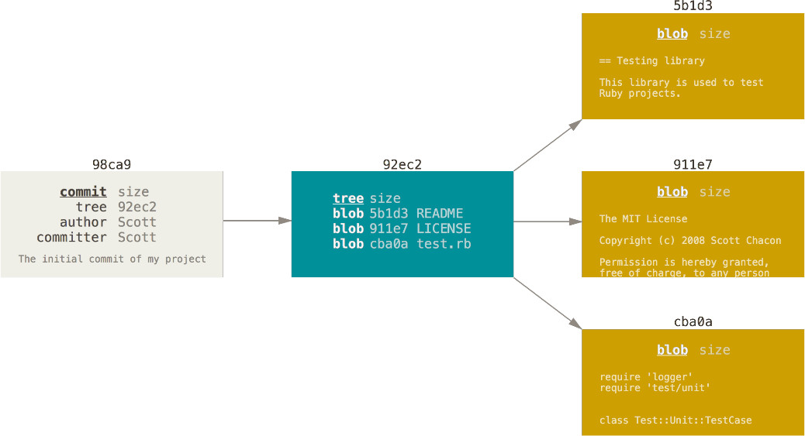
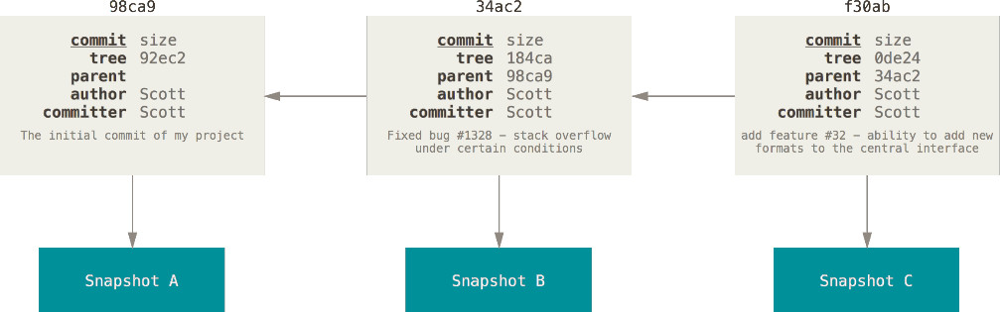
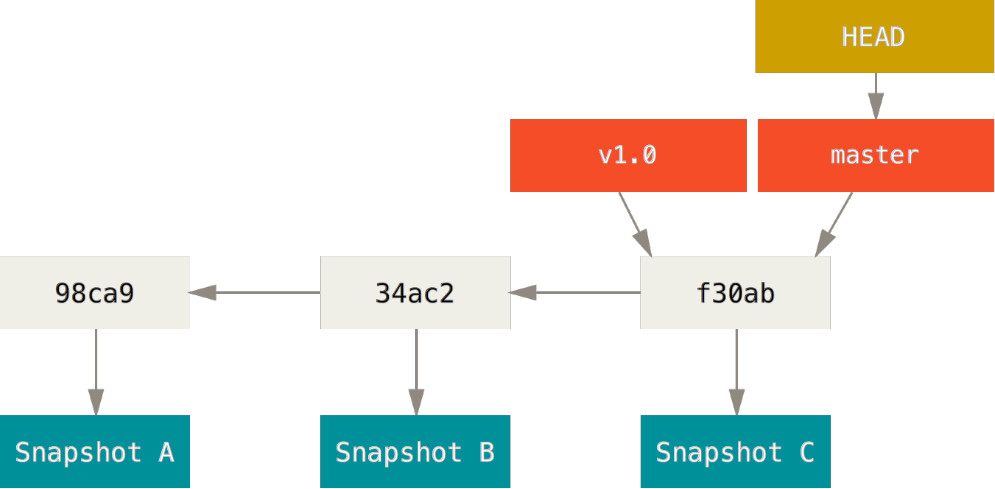
Créer une nouvelle branche avec comme nom "testing"
$ git branch testing
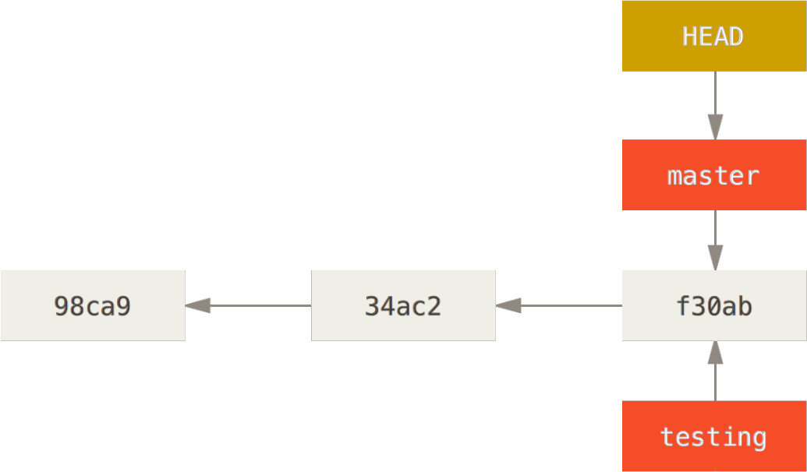
Changer de branche sur la branche "testing"
$ git checkout testing
Switched to branch 'testing'
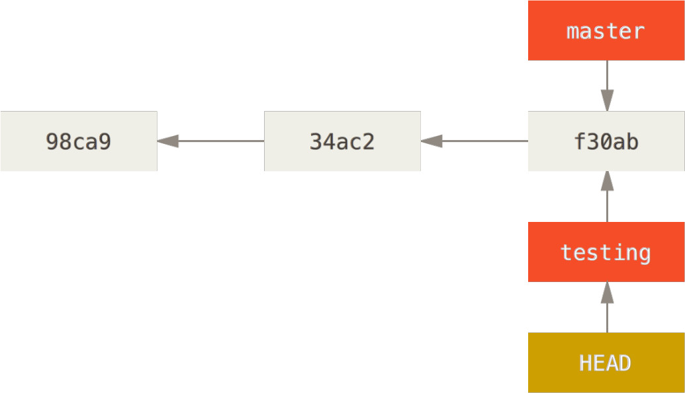
Ajouter un commit sur la branche "testing" avec git commit
$ vim git-gestion-version-m1.html
$ git commit -a -m "Ajout experimental"
[testing 64ff99b] Ajout experimental
1 file changed, 1 insertion(+), 1 deletion(-)
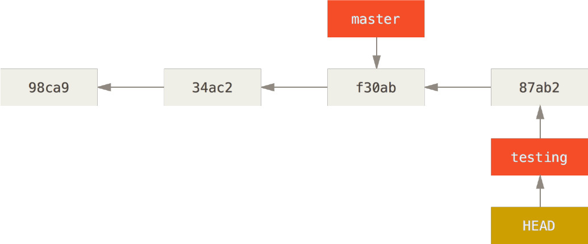
Ajouter un commit sur la branche "master", en revenant sur master avec git checkout master, puis en faisant un commit
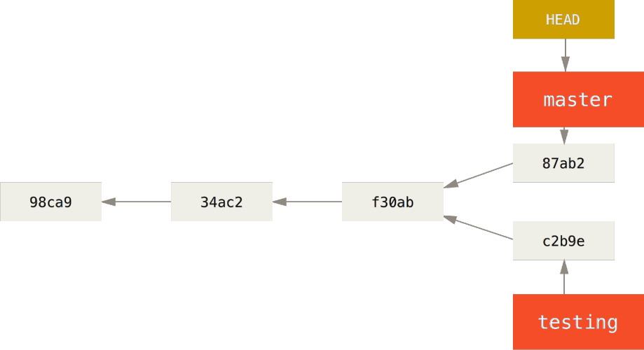
$ git log --graph --oneline --all
* a2d71b4 Commit sur branche master
| * dc1d4a9 Ajout d'un commit sur testing
|/
* 19b4b66 Ajouter la structure HTML
* 876c849 Ajout presentation HTML
git branch : créer une nouvelle branche
git checkout : se positionner sur une nouvelle branche (même commande que pour récupérer un fichier, ce qui revient à faire "récupérer tous les fichiers d'une branche")
La fusion (merge) est l'inverse de la branche, parce qu'elle rassemble 2 historiques de développement. La fusion ne supprime pas les branches, et en fonction des fichiers modifiés, il faut parfois régler les conflits.
Plusieurs types de fusion, git décide lui-même quoi faire
Fast-forward : pas de conflit possible, on ajoute seulement ce qui manque
Recursive merge : merge par défaut, conflits possibles à résoudre à la main
Octopus merge : comme le merge récursif, mais avec plus de 2 branches
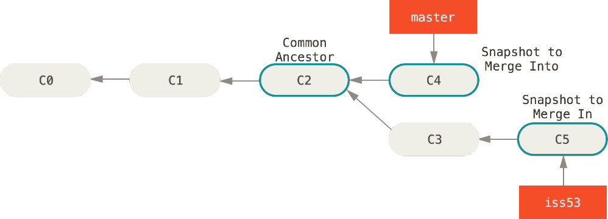
Fusionner deux branches en se positionnant sur la branche de base "master", puis en mergeant l'autre branche "fusion-pas-de-conflit" dans la branche de base
$ git checkout master
$ git merge fusion-pas-de-conflit
Updating a2d71b4..bea04e9
Fast-forward
pas-de-conflit | 0
1 file changed, 0 insertions(+), 0 deletions(-)
create mode 100644 pas-de-conflit
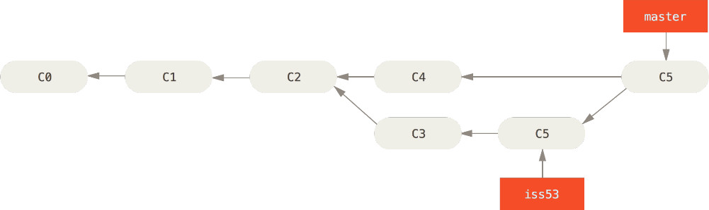
Lorsque la même ligne est modifiée, git ne peut pas merger, il faut le faire à la main
$ git merge fusion-avec-conflit
Auto-merging git-gestion-version-m1.html
CONFLICT (content): Merge conflict in git-gestion-version-m1.html
Automatic merge failed; fix conflicts and then commit the result.
<<<<<<< HEAD
<!DOCTYPE HTML PUBLIC "-//W3C//DTD HTML 4.01//EN"
"http://www.w3.org/TR/html4/strict.dtd">
=======
<!DOCTYPE html>
>>>>>>> testing
<head>
</head>
<body>
</body>
Enlever les marqueurs voulus
<!DOCTYPE html>
<head>
</head>
<body>
</body>
Faire ensuite un commit, le message sera déja renseigné par git avec Merge branch 'testing' et les fichiers en conflit
$ git add git-gestion-version-m1.html
$ git commit
Pour l'instant, on n'a traité que des branches locales. Pour les branches distantes, les pointeurs sont préfixés par le nom du serveur, souvent origin
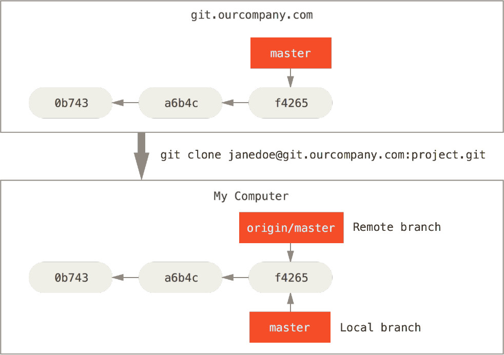
Le pointeur de branche master avance en local... mais pas le pointeur de branche origin/master
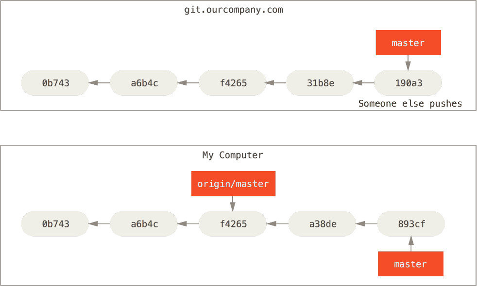
Permet de récupérer les commits qui sont disponibles sur le serveur
$ git fetch
remote: Counting objects: 3, done.
remote: Total 3 (delta 2), reused 2 (delta 2), pack-reused 1
Unpacking objects: 100% (3/3), done.
From github.com:lesfurets/lesfurets-conferences
a2e5c10..11f08f8 gh-pages -> origin/gh-pages
Après un git fetch le pointeur origin/master a avancé, dans ce cas de deux nouveaux commits
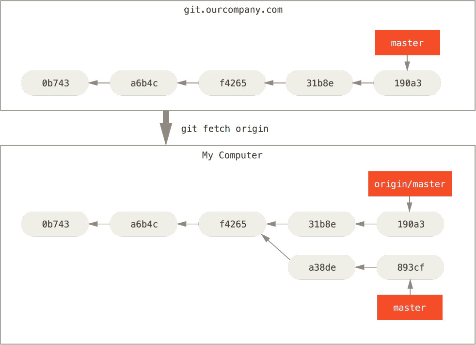
Le type de fusion "fast-forward" n'est plus disponible, parce que les 2 historiques ont "divergé" (il y a des nouveaux commits des 2 côtés)
$ git push
To https://github.com/dubreuia/conferences.git
! [rejected] gh-pages -> gh-pages (non-fast-forward)
error: failed to push some refs to 'https://github.com/dubreuia/conferences.git'
hint: Updates were rejected because the tip of your current branch is behind
hint: its remote counterpart. Integrate the remote changes (e.g.
hint: 'git pull ...') before pushing again.
hint: See the 'Note about fast-forwards' in 'git push --help' for details.
Rappel : le pull est un fetch (récupération des données du distant) + merge (fusion d'une branche, soit la branche distante)
$ git pull
Merge branch 'gh-pages' of https://github.com/dubreuia/conferences into gh-pages
Équivalent à :
$ git fetch && git merge origin/master
$ git log --graph --oneline
* 988e120 Merge branch 'gh-pages' of https://github.com/dubreuia/conferences into gh-pages
|\
| * af401f2 Add architecture slide
* | f9a1aef nouveau commit
|/
* 5faf3ff Add concert page and correct logo
Copie les commit du distant avant les commits locaux, utile pour avoir un historique sans "branchement"
Attention : fonctionnalité avancée, c'est facile de se planter
$ git pull --rebase
First, rewinding head to replay your work on top of it...
Applying: nouveau commit
Équivalent à :
$ git fetch && git rebase origin/master
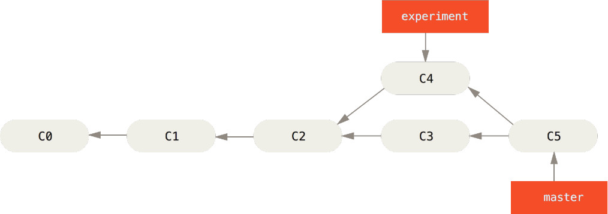
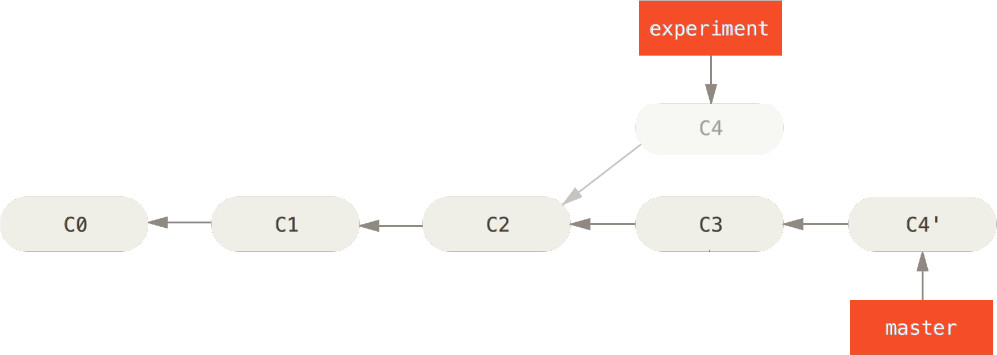
git fetch : récupérer les commits du server
git pull : récupérer les commits du server et les appliquer
git push : envoyer les commits sur le serveur

https://jan-krueger.net/git-cheat-sheet-take-two

https://www.git-tower.com/blog/git-cheat-sheet/

- Ces slides sont sur github
https://github.com/lesfurets/lesfurets-conferences
- Les images de ces slides viennent de
https://www.git-scm.com/book/fr/v2
- Voir aussi le man page en ligne
https://www.kernel.org/pub/software/scm/git/docs/
- Et notre projet open-source git-octopus
https://github.com/lesfurets/git-octopus